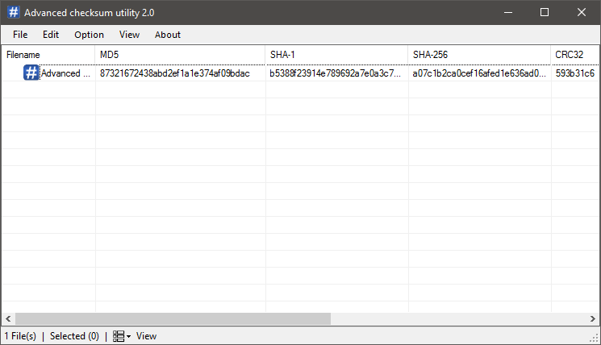

Titel of Article

Advanced checksum utility 3.0 is an free, fast and easy to use file hashing application. With Advanced checksum utility 3.0 you can hash any of your files or srtings it fast and easy, it hase multiple function like send hash to VirusTotal or save all generated hash into an HTML document...
All features & functions :
Supports file & string hashing
Drag and drop support (drag an file or Folder into Advanced checksum utility 3.0 and it will automatically add it)
Support multiple hashing algorithms (MD5,SHA1>SHA512,CRC32,RIPMED-160)
Hash verifiying (check the hashes with the corresponding file to ensure the integrity of the File is correct)
Running process hashing (Add running process to get their Hash)
File information (You can get information about of any file in the list and save it)
Send a hash to VirusTotal (chek if the given hash is in VirusTotal Database and see if infected)
Show hashes in Upper or lower case
Save selected or all added files into a HTML document
Customizable Tool (You can change View mode or enable or disable Gridlines...)
Portable Tool (requires no installing)
32-Bit and 64-Bit support
Support multiple languages (English & french)
Generate a checksumfile (Create a checksumfile supported format are *.sfv *.md5 *.sha1 )
verify checksum from checksumfile (*.sfv*.md5*.sha1 (not stable)
Wordlist hashing (hashing a wordlist )
Dark theme
save file icon
Advanced file information (Get deep information of .exe or .sys file)
HMAC (SHA1>SHA512 & MD5 & RIPMED160)
Add to windows context menu (right click on a file or a folder to hash)
Minimum System Requirements : Windows XP SP3 , .NET Framework 4.5
For any suggestion or bug report ,please feel free to contact me via email wich you can find in the About form.